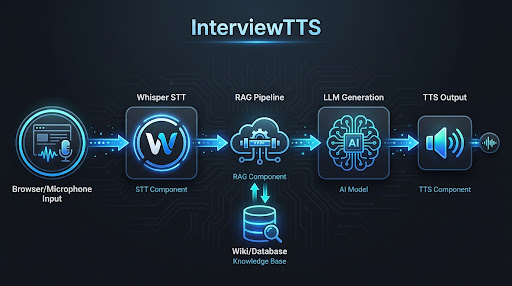
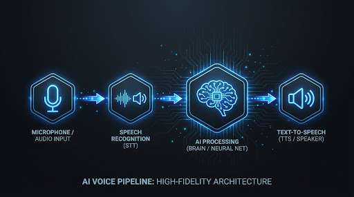

Arquitectura End-to-End
El pipeline completo de voz: del micrófono del navegador al audio sintetizado que responde a la pregunta del reclutador.
Visión general

Arquitectura del sistema: Browser → FastAPI → Whisper → RAG+Wiki → LLM → TTS → SSE
El sistema se compone de cinco componentes de inferencia (STT, RAG, LLM, TTS y el orquestador FastAPI) apoyados por tres servicios de soporte: la capa de persistencia en SQLite, el servicio de informes y el barrido de mantenimiento. Cada pieza tiene una responsabilidad clara y acotada, lo que facilita tanto el desarrollo independiente como la optimización de cada etapa del pipeline.
Mapa de módulos: no es un monolito
El orchestration vive en main.py (347 líneas), que es un composition root: construye los servicios, monta el lifespan y monta las rutas. No es un archivo que contenga el sistema.
| Módulo | Responsabilidad |
|---|---|
| main.py | Composition root: construye servicios, lifespan, montaje de routers y middlewares |
| routers/ | Los 5 endpoints HTTP, agrupados por dominio: system.py (health y config), conversations.py (crear y contexto), turns.py (los dos caminos del turno) |
| turns/ | El turno, partido por forma de entrega: blocking.py, streaming.py, errors.py (todo el texto que ve el candidato, en un sitio), answer_source.py |
| container.py | El contenedor de dependencias: los singletons y cómo se llega a ellos |
| services/ | STT, TTS, LLM, RAG, rerank, caché de respuestas, persistencia e informes |
| maintenance.py | El barrido en segundo plano: conversaciones caducadas, audio viejo, informes expirados |
| sse.py | Formateo de eventos SSE y el keepalive que mantiene el cable vivo |
| middleware.py | MaxBodySizeMiddleware y RateLimitMiddleware |
Dos decisiones de estructura sostienen esa tabla. La primera es que los dos caminos del turno son código separados, no un modo dentro del mismo: el contrato de eventos SSE y el log desglosado por fase solo existen en el camino de bloqueo, y el entrelazado de LLM y TTS solo tiene sentido en el de streaming. La segunda es que errors.py existe para que el texto que ve el candidato sea revisable como un conjunto: ningún payload de error contiene rutas internas, trazas ni detalle de proveedor.
Flujo por turno
Cada interacción sigue el mismo patrón. La conversación se divide en turnos, donde cada turno es un ciclo completo de procesamiento:
- Captura de audio: El navegador graba con la MediaRecorder API y envía el archivo en un POST multipart (
FormData). El backend acepta webm o m4a según el tipo MIME. - STT (Speech-to-Text): Faster-Whisper transcribe el audio a texto en español (modelo small cuantizado a int8).
- Caché de respuestas antes de gastar cómputo: un único diccionario literal de 20 preguntas frecuentes. Si acierta, la respuesta pre-generada sale al instante y se salta RAG y LLM. No hay un segundo caché: el semántico se midió y se eliminó, y el capítulo 05 cuenta por qué.
- RAG (Retrieval-Augmented Generation): Se busca contexto relevante en los documentos Markdown de la wiki del candidato —37 páginas en el árbol de trabajo, 33 en un clon limpio—, y después un cross-encoder reordena los tres resultados ya elegidos.
- LLM: Un modelo de lenguaje genera la respuesta en streaming usando el contexto recuperado.
- TTS (Text-to-Speech): Edge TTS (voz es-ES-AlvaroNeural) sintetiza cada frase completa como tarea paralela en cuanto está lista.
- SSE (Server-Sent Events): El servidor emite eventos
transcription,token,audio_urlydone; en caso de error añadeerror; si detecta una despedida, añadeinterview_end.audio_urles el nombre canónico único del evento de audio; lleva opcionalmente unid, que es el cursor de reproducción del navegador y se omite cuando la respuesta es un único fichero entero.
Ver también: capítulo 05 detalla el contrato del caché y la política de latencias, y la sección de servicios de soporte explica qué ocurre con cada turno una vez terminado.
Dos rutas para el mismo turno
El turno no tiene una implementación con dos modos: tiene dos endpoints y dos módulos.
| Bloqueante | Streaming (SSE) | |
|---|---|---|
| Endpoint | POST /api/conversation/{id}/message | POST /api/conversation/{id}/message/stream |
| Módulo | turns/blocking.py | turns/streaming.py |
| Qué entrega | Un JSON completo al final | Eventos incrementales |
| Log de fases | Pipeline: STT=… RAG=… LLM=… TTS=… TOTAL=… | Stream STT: … y un total de LLM+TTS combinado, sin desglose |
| Fallback de proveedor | Sí, siempre seguro | Solo antes del primer token; después se lanza |
| Por qué existe | Simple, sin estado de conexión, fácil de testear | Es lo que el producto usa: la primera frase suena antes de que termine la generación |
El módulo de streaming también genera el keepalive: si el stream se queda callado más de 15 s, emite un frame de comentario SSE (: keepalive) que no lleva evento ninguno. Es la mitad del trabajo de sse.py, y existe porque el stream no envía su primer byte hasta que Whisper termina —con WHISPER_MODEL=small sobre CPU, una transcripción lenta se pasa un rato largo en cero bytes—. El intervalo de 15 s está por debajo del proxy_read_timeout de nginx (300 s) a propósito, y un test afirma que los dos no se separen.
El contrato de done y error
Cada stream emite exactamente un evento terminal, y es el último. Los dos eventos que nombran un turno —done e interview_end— llevan la carga idéntica, construida por la misma función a partir del turno que la base de datos comiteó de verdad:
| Payload | Cuándo |
|---|---|
| {n, has_context} | Turno normal, completo |
| {n, has_context, incomplete: true} | El candidato no se llevó la respuesta entera. O el modelo dejó de generar, o generó todo y el sintetizador solo entregó parte |
| {} | No se almacenó ningún turno: la transcripción vino vacía, o el TTS no entregó nada (turno muerto) |
El n ausente significa que no se guardó turno, así que el cliente no pregunta al panel de contexto. Y hay un campo más en el evento de contexto: context_grounding, con dos valores —grounded y related— que es la procedencia de los chunks. El campo se omite, en lugar de decir grounded, cuando el turno no tiene chunks o no hay nada que afirmar; y un campo ausente en un servidor viejo se lee como grounded, que es lo que un turno sin contexto es de hecho.
Error fatal frente a recuperable es una distinción, no un matiz de redacción. Un error recuperable —una frase que no se pudo sintetizar— se emite con un id de chunk, que es la señal de "sáltate esta y sigue", y solo es honesto mientras sigue llegando audio. Si el turno termina así, se marca incomplete: lo que hay en disco es todo lo que el modelo produjo y el candidato oyó una fracción. Un error fatal se emite sin id, avisa de que conviene repetir, y en el caso del TTS implica turno muerto: nada almacenado. La diferencia es todo lo que la página puede mostrar honestamente.
Dos casos de error tienen tres desenlaces, no dos, y el mensaje recuperable es el que el candidato lee en dos de ellos. El detalle fino: la marca incomplete se pone cuando se pidió síntesis y se entregó menos, y algo se oyó. Nada oído no es una respuesta corta, es que no hay respuesta, y marcarla gastaría el indicador en un silencio.
Los endpoints de sistema
Además del turno, el sistema expone cinco endpoints. Tres son de lectura y existen para que un operador o una página puedan ver el estado real en vez de suponerlo:
| Endpoint | Para qué existe |
|---|---|
| GET /api/health | Estado derivado: status es la conjunción de las señales que el servicio ya sabe reportar, y problems nombra cuál falló. Publica rag_mode, rerank_mode, rerank_identity y el estado de persistencia. El código HTTP no cambia por un cuerpo degradado: una respuesta degradada no es una caída |
| GET /api/config | La configuración de modelos activa para la interfaz. max_audio_duration está aquí porque la página tiene que acotar una grabación antes de subirla, y un límite que solo existe en el servidor se lo enseña demasiado tarde. llm_configured también: ninguna de las dos claves se valida al arrancar, así que un clon sin clave en .env levanta limpio y falla en su primer turno |
| GET /api/conversation/{id}/context | El panel de contexto. Es la superficie que recibe los chunks con sus cabeceras — la que nunca debe tocar el canal de voz |
Los dos middlewares son la otra mitad del contrato público. MaxBodySizeMiddleware comprueba el Content-Length y corta con 413 antes de que corra ningún handler, en vez de dejar que la subida se materialice en memoria para rechazarla después. RateLimitMiddleware limita por IP, y es la razón por la que el backend necesita --proxy-headers: sin él, request.client.host es el proxy en todas las peticiones y todos los visitantes comparten un cubo.
Streaming real: frases, no tokens sueltos
Una decisión sutil pero crítica: el TTS no se dispara token a token. Un SentenceBuffer acumula los tokens del LLM y solo cuando detecta un límite gramatical (. ! ? salto de línea) libera la frase completa para síntesis.
- Prosodia: Edge TTS necesita la frase entera para entonarla de forma natural; cortar a mitad genera micro-pausas audibles entre fragmentos.
- Menos llamadas de síntesis: una respuesta de tres frases produce tres archivos MP3 en lugar de decenas de fragmentos diminutos.
- Paralelismo real: cada frase se sintetiza como tarea asyncio independiente mientras el LLM sigue generando; cada MP3 listo se emite como evento
audio_urlcon su identificador para que el navegador lo reproduzca en orden.
Pocket TTS y Piper (clonación de voz local) aparecen mencionadas en algunos materiales del proyecto: son exploración futura, no el motor enviado a producción. Hoy la voz es Edge TTS.
Ver también: el capítulo 04 — LLM muestra el código del buffer de frases.
Por qué SSE y no WebSockets

Pipeline STT → LLM → TTS con streaming unidireccional
Esta fue una de las decisiones arquitectónicas más importantes. Los WebSockets permiten comunicación bidireccional, pero en este caso el flujo es fundamentalmente unidireccional durante la fase de respuesta: el servidor genera tokens y los envía al cliente.
SSE es más simple, se integra nativamente con HTTP, y funciona detrás de proxies y load balancers sin configuración adicional (salvo desactivar el buffering de Nginx). Para streaming de eventos generados, es la herramienta correcta.
Ventajas de SSE para este caso:
- Simplicidad: No requiere handshake propio como WebSockets. Una conexión HTTP simple.
- Compatibilidad: Funciona con proxies HTTP estándar y Nginx sin configuración especial.
- Dirección unidireccional: El cliente envía la pregunta vía POST multipart; el servidor responde vía SSE. No se necesita bidireccionalidad.
Cuando el cliente necesita enviar algo nuevo (otra pregunta), simplemente hace otra petición POST. Cada turno es independiente.
FastAPI como orquestador
FastAPI no es solo un framework HTTP aquí — es el orquestador central que coordina todos los componentes. Gracias a su soporte nativo para async/await y StreamingResponse:
- Recibe el audio del navegador como upload multipart
- Ejecuta Whisper STT fuera del event loop (vía
asyncio.to_thread) para no bloquear otros clientes - Corre el stream del LLM en un executor y puentea los tokens al loop con una cola thread-safe
- Lanza las tareas de TTS por frase en paralelo y emite cada
audio_urlal terminar - Escribe en SQLite y genera informes post-hoc sin bloquear la respuesta
Todo esto manteniendo la concurrencia: un turno lento nunca congela el servidor para el resto.
Servicios de soporte: persistencia, informes y mantenimiento
Tres servicios rodean al pipeline sin meter ruido en él:
- Capa de persistencia (SQLite en modo WAL): escritura write-through en cada evento relevante (creación de conversación, turno, despedida, informe). Si el proceso muere, la entrevista sobrevive: al llegar un id conocido pero ausente en memoria, la conversación se hidrata desde la base de datos.
- Servicio de informes: al detectarse la despedida (o al expulsarse una conversación por TTL), se escribe la transcripción completa en Markdown bajo
reports/{cid}/{timestamp}.md, siempre víaasyncio.to_thread. - Barrido de mantenimiento: una tarea en segundo plano, arrancada una vez desde el lifespan y cancelada al apagar, que expulsa conversaciones caducadas, borra audio viejo y poda informes. Cada paso va individualmente protegido para que un servicio que falle no detenga el resto del barrido —un barrido que se rinde a la mitad deja audio obsoleto en disco para siempre. El orden dentro del tick es determinante: el informe de una conversación se genera antes de borrarla, porque el informe es el único registro que sobrevive a la expulsión por diseño.
Los tres comparten una filosofía: nunca rompen el turno en vivo. Si la base de datos o el disco fallan, el error se registra y la entrevista continúa.
Ver también: el capítulo 06 — Persistencia y memoria cubre esquema, WAL, hidratación y política de fallos en detalle.
El rol del frontend
El navegador no es un simple reproductor. El frontend maneja:
- Grabación de audio: MediaRecorder API del navegador
- Envío de audio: POST multipart con el audio capturado
- Recepción SSE: procesa los eventos
transcription,tokenyaudio_url - Reproducción ordenada: encadena los chunks de audio respetando el identificador de frase
- Avatar audio-reactivo: un avatar que reacciona a la amplitud del audio